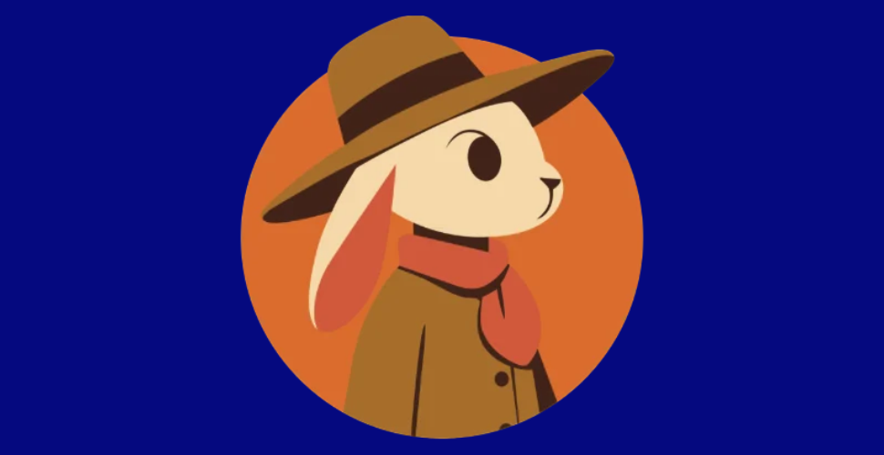

AUTUMN BUNNY

Ilustración vectorial de personaje, proyecto realizado para la materia de Ilustración Comercial.
Formato
Diseño realizado en Adobe Illustrator
Proceso y propuesta
Trabajo ilustrado en vectores basado en un personaje ficticio, con una apariencia amigable. Los colores del personaje se idearon para transmitir esa esencia de otoño, así como la ropa y elementos que se meustran.